Menu: fora do menu (a tela só abre digitando o endereço /controle-qualidade/amostragem/verificacoes-amostragem; não há item para ela no menu do Controle da Qualidade) · Situação do manual: Em ajuste · Fonte dos prints: versão nova.
Aviso sobre as fontes. Esta tela não tem manual do legado: ela vem do front novo e não tem equivalente com o mesmo nome no sistema entregue pelo fornecedor. Tudo abaixo vem da rodada 1 de testes da versão nova (11/11/2026) e da rodada de conferência do robô de 17/11/2026 (conta de administrador de teste, prints
PNR2-verificacao-especifica-de-amostragem-*; a conferência foi parcial: ficaram sem teste o perfil sem permissão, a resposta 401 desta rota e o uso na amostragem). O que é inferência está marcado como "(a confirmar com a área)" ou "Ponto para validar".
Para que serve
Cadastra uma verificação específica da amostragem para um item de análise e um tipo de análise determinados: tem Nome e Descrição e liga-se ao item pelo número do cadastro (campos Item de Análise, Tipo de Item e Tipo de Análise). Diferente de Verificação de Amostragens (o checklist geral, sem ligação a um item), esta tela prende a verificação a um item. Como a versão nova usa essa verificação durante a amostragem não pôde ser conferido em 17/11/2026 (Programação de Amostragem e Amostragem são provisórias): Ponto para validar.
Item e tipos não são obrigatórios na prática: a verificação grava só com o Nome, ou com item e sem tipos (DV-CQ-N-020), e a lista não mostra o item nem os tipos (só abrindo a edição).
Antes de começar (o que precisa existir)
| O que precisa existir | Para quê | Onde se cadastra |
|---|---|---|
| Um item de análise (no teste, o número 1, do item T.INS-001) | Campo "Item de Análise" (número) | O item nasce quando se grava a primeira regra para ele, em Amostragem > Regra Amostragem (o teste usou o item criado por essa tela) |
| Tipo de Item (aceitos 100, 200 e 300; 400 e 500 recusados) | Campo "Tipo de Item" (número) | Valores fixos do sistema (não há tela) |
| Tipo de Análise (aceitos 1 e 2; 3 recusado) | Campo "Tipo de Análise" (número) | Valores fixos do sistema (não há tela) |
| Acesso à tela | Não está no menu | Digitar o endereço |
Passo a passo
- Abrir a tela. Digite o endereço da tela (ela não está no menu). Abre com o título VERIFICAÇÃO ESPECÍFICA DE AMOSTRAGEM, o quadro Pesquisa (campo Pesquisa e lista Ativo com TODOS, SIM e NÃO), os botões PESQUISAR e LIMPAR e o link verde Incluir. A lista só aparece depois de PESQUISAR.
A imagem mostra a tela ao abrir: quadro Pesquisa, botões PESQUISAR e LIMPAR e o link Incluir; a lista não aparece.
- Incluir. Clique em Incluir. Abre o quadro Dados com os campos abaixo e os botões SALVAR e VOLTAR. Item de Análise, Tipo de Item e Tipo de Análise são caixas de número digitadas à mão; o único campo com asterisco é Nome.

A imagem mostra o formulário em branco: Item de Análise, Tipo de Item, Tipo de Análise, Nome*, Descrição e Ativo (Sim marcado), com SALVAR e VOLTAR.
- Salvar vazio. Clique em SALVAR sem preencher. Nada acontece: não aparece mensagem de campo obrigatório nem faixa de aviso, e o formulário continua igual (DV-CQ-N-003).
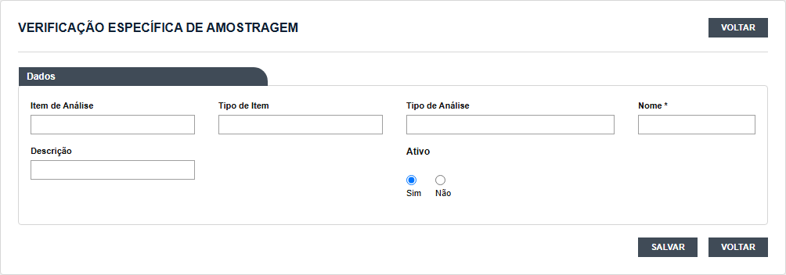
A imagem, tirada logo depois de clicar em SALVAR com tudo vazio, mostra o mesmo formulário em branco, sem nenhuma mensagem (conferido em 17/11: também não há chamada ao servidor). O mesmo vale com só a Descrição preenchida e o Nome em branco:
- Preencher. Digite o Item de Análise (1), o Tipo de Item (300), o Tipo de Análise (1), o Nome ("T. CQ verificação específica") e a Descrição ("T. CQ descrição").

A imagem mostra os cinco campos preenchidos, com Ativo = Sim. Repare que o campo Nome é bem mais estreito que os outros e corta o texto (DV-CQ-N-021), embora aceite 255 caracteres.
- Salvar. Clique em SALVAR. O registro é gravado e a tela volta aos filtros sem mensagem e sem confirmação (DV-CQ-N-002).

A imagem, tirada logo depois de salvar, mostra só a tela de filtros, sem nenhuma mensagem de sucesso: ela não existe.
- Ver o registro na lista. Clique em PESQUISAR. A lista mostra as colunas Nome, Descrição e Ativo e os ícones de Editar (lápis) e Excluir (lixeira), com paginação Anterior / Página 1 de 1 / Próxima.
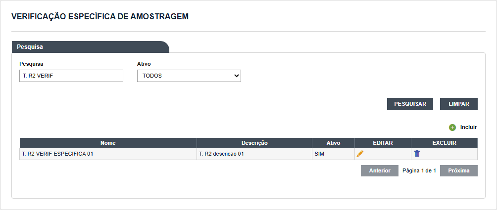
A imagem mostra a linha incluída com Nome, Descrição e Ativo = SIM. A lista não mostra o item nem os tipos: só abrindo a edição se vê a quem a verificação se liga.
- Editar. Na lista, clique no lápis. O formulário abre com os dados gravados. Altere o campo e clique em SALVAR. No teste a alteração foi gravada direto, sem pergunta de confirmação, sem pedir justificativa e sem mensagem; a tela volta aos filtros.
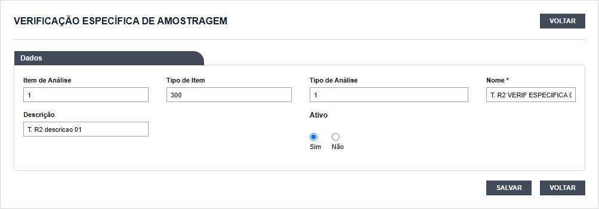
A imagem mostra o registro aberto com os dados gravados (item, tipo de item, tipo de análise, nome e descrição).
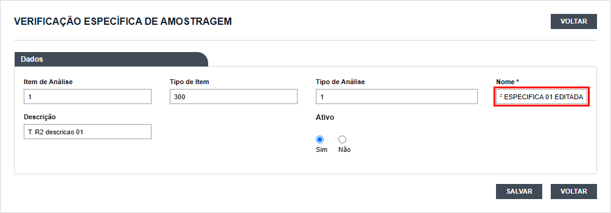

- Incluir o mesmo registro duas vezes. O sistema aceita: nada impede o repetido (DV-CQ-N-003). Conferido em 17/11: mesmo item, tipos e nome gravaram dois registros (ids 3 e 4).

A imagem mostra a tela de filtros depois da segunda inclusão igual: sem recusa nem aviso. A lista mostra os dois registros de mesmo Nome:
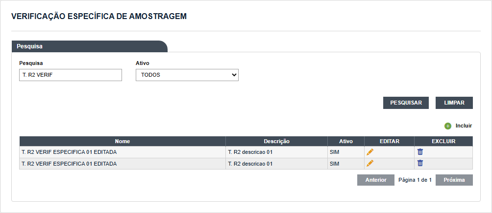
- Excluir. Na lista, clique na lixeira. Aparece a caixa Confirmar exclusão com a pergunta "Deseja excluir este registro?" e os botões CANCELAR e CONFIRMAR. Não pede justificativa. Ao confirmar, o registro some da lista (exclusão confirmada pelo servidor, sem corpo); a lista já aparece atualizada; não aparece mensagem de sucesso.
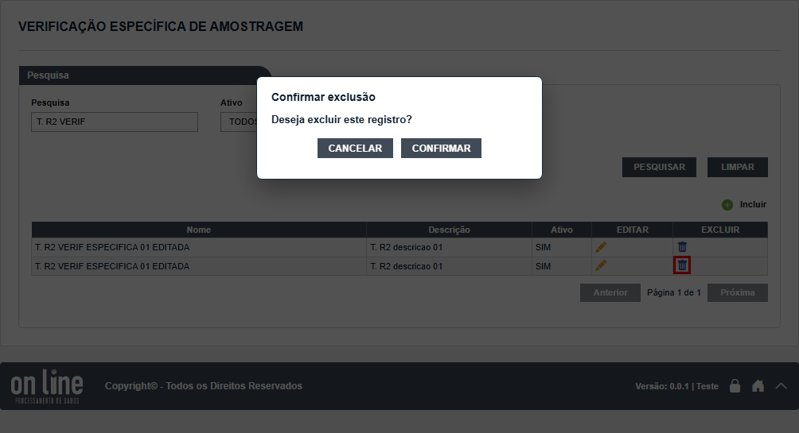
A imagem mostra a caixa "Confirmar exclusão" sobre a lista, sem campo de justificativa (CANCELAR mantém as duas linhas).
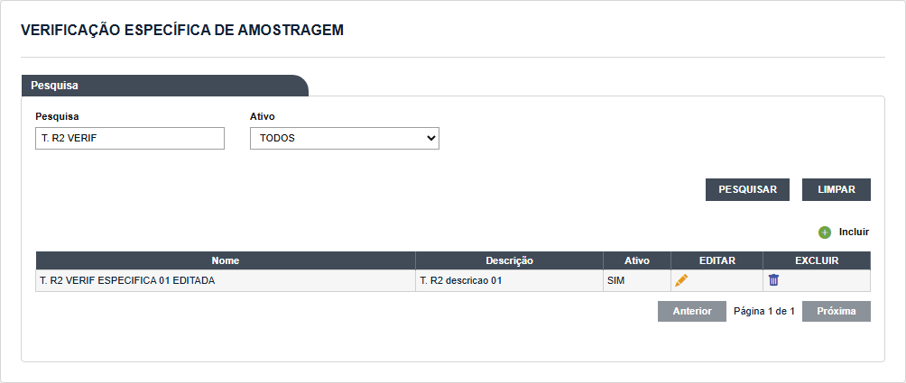
A imagem mostra a tela logo depois de CONFIRMAR: a lista já vem atualizada, com o filtro mantido, e sobra uma linha.
- Histórico. Não existe. A linha da lista só tem Editar e Excluir; não há botão de histórico (log) nesta tela (DV-CQ-N-003).
- Item e tipos: o que a tela aceita. Só com o Nome a verificação grava (item e tipos em branco); com item e sem tipos também. O mesmo item 1 foi aceito com Tipo de Item 100, 200 e 300 (só um pode ser o certo). A lista só mostra Nome, Descrição e Ativo:

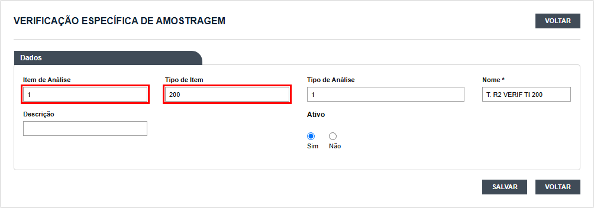
A primeira imagem mostra a lista com várias verificações, sem item nem tipos. A segunda mostra a edição do item 1 com Tipo de Item 200 (o mesmo item foi aceito com 100, 200 e 300). Resultado de salvar só com o Nome:
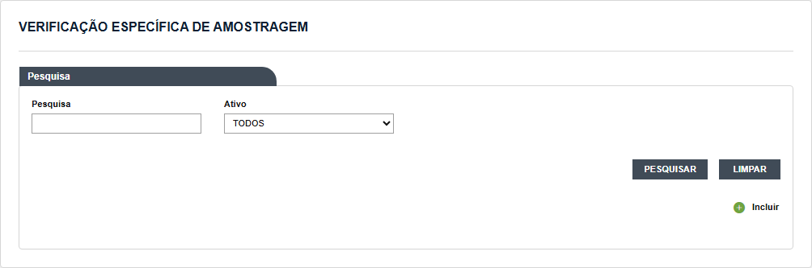
- Pesquisar e inativar. A pesquisa procura só no Nome (uma palavra da Descrição, "micro", não acha nada). Sem resultado: "A pesquisa não retornou nenhum resultado." O filtro Ativo = NÃO mostra só os inativos. LIMPAR esvazia a pesquisa e volta Ativo a TODOS, sem listar. Inativar (Ativo = Não na edição) grava e a lista mostra "NÃO".
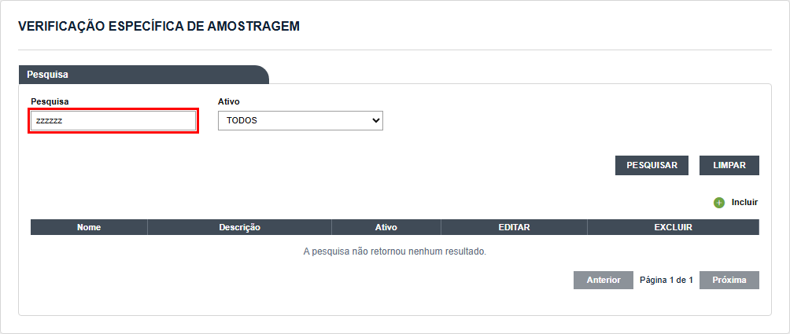
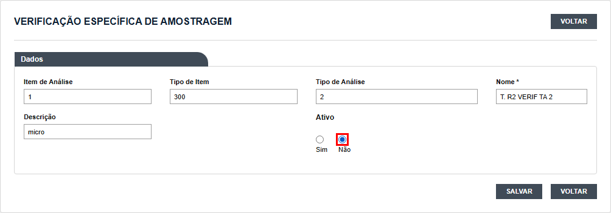
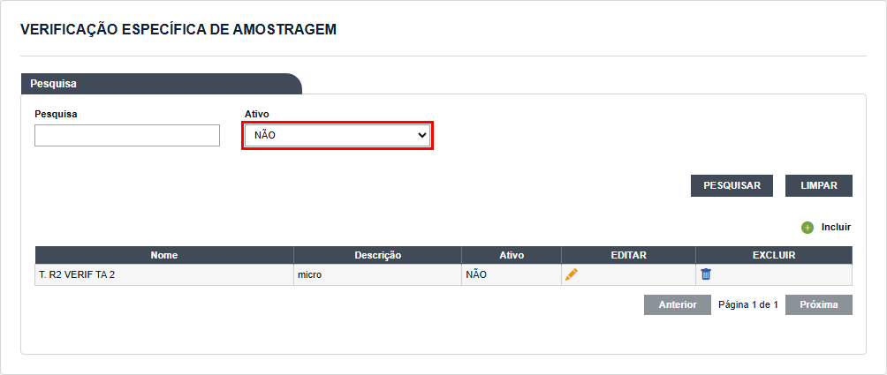
Ícones e botões da lista
| Ícone ou botão | O que faz |
|---|---|
| Lápis (EDITAR) | Abre o registro no formulário |
| Lixeira (EXCLUIR) | Pede "Deseja excluir este registro?" e exclui; sem justificativa |
| Histórico (log) | Não existe |
| Anterior / Próxima | Troca de página ("Página 1 de 1" no teste) |
Botões e ações
| Botão | Onde | O que faz |
|---|---|---|
| PESQUISAR | Filtro | Mostra a lista conforme o filtro |
| LIMPAR | Filtro | Esvazia a pesquisa e volta Ativo a TODOS, sem listar |
| Incluir | Filtro | Abre o formulário em branco |
| SALVAR | Formulário | Grava (inclusão ou edição) e volta aos filtros, sem mensagem |
| VOLTAR | Formulário (no alto e no pé) | Volta à tela de filtros sem gravar (não testado isoladamente) |
| Lápis / Lixeira | Linha da lista | Editar / Excluir |
Mensagens do sistema
| Mensagem | Quando aparece |
|---|---|
| Confirmar exclusão: "Deseja excluir este registro?" (CANCELAR, CONFIRMAR) | Ao clicar na lixeira |
| (nenhuma) | Ao salvar vazio, incluir, editar ou incluir repetido: o sistema não mostra mensagem (DV-CQ-N-002 e N-003) |
| Item de análise não encontrado. | Item 99999 ou -1 |
| Tipo de item de análise não encontrado. | Tipo de item fora de 100, 200 e 300 |
| Tipo de análise não encontrado. | Tipo de análise fora de 1 e 2 |
| A pesquisa não retornou nenhum resultado. | Pesquisa sem resultado |